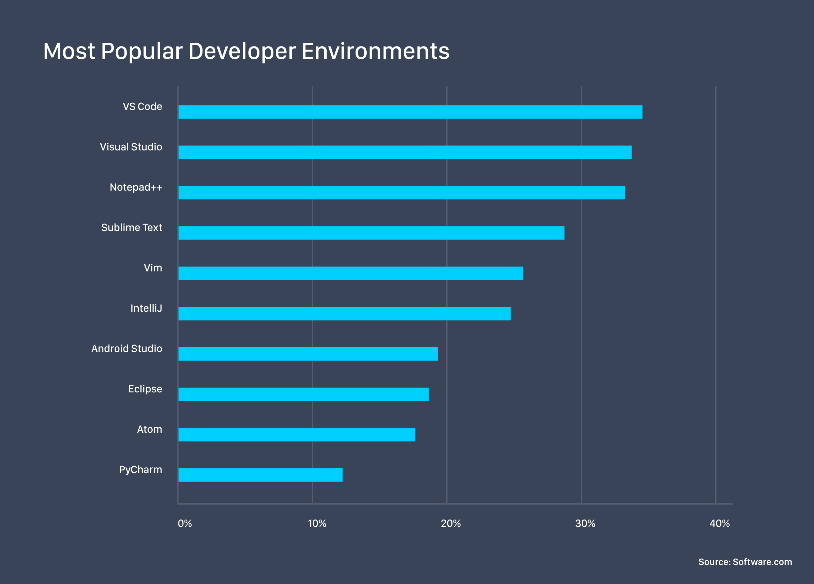
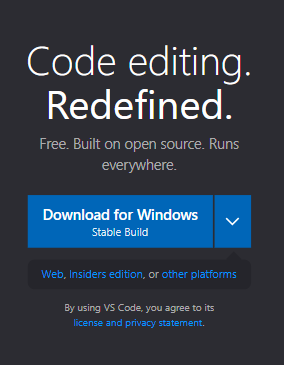

Visual Studio Code
Stanislav Borisov
Introduction
What is Visual Studio Code (VSC)?
Visual Studio Code is a code editor redefined and optimized for building and debugging modern web and cloud applications.
Popularity
Features
Free and open-source
Visual Studio Code is a free and open-source code editor developed by Microsoft, and is used by millions of developers around the world.
Cross-platform support
Visual Studio Code runs on Windows, macOS, and Linux, making it accessible to developers on all major operating systems.
Extensions marketplace
Visual Studio Code has a large and active community of developers who create and share extensions that add new features and functionality to the editor.

Customizable

IntelliSense
Visual Studio Code's IntelliSense feature provides intelligent code completion and suggestions based on the code you are writing, making it faster and easier to write and debug code.

Git integration
Visual Studio Code includes built-in support for Git, allowing developers to manage version control directly from the editor and easily collaborate with others on their code.

Some Useful Shortcuts
Open projects/files
- Ctrl + R - Open recent projects (folders)
- Ctrl + P - Go to File
Working with code
- F2 - Rename symbol
- Ctrl + X - Cut current line
- Alt + Arrow Up/Down - Move current line of code Up/Down
Working with terminal
- Ctrl + ` - Show integrated terminal
- Ctrl + Shift + ` - Create new terminal
Comparison to Other Code Editors
Sublime Text
Advantages
- Speed and efficiency
- Prioritize performance and customization
Disadvantages
- Not beginner-friendly as Visual Studio Code
- No advanced features (e.g. Git Integration)
Notepad++
Advantages
- Lightweight and simple
- Great for basic coding tasks
Disadvantages
- Lacks many of the advanced features
- May not be sufficient for more complex projects

Conclusion
Visual Studio Code is a powerful and versatile code editor that can help developers be more productive and efficient in their work.
Thank for your attention!
Questions
1. What is Visual Studio Code?
Visual Studio Code is a code editor redefined and optimized for building and debugging modern web and cloud applications.
2. What are features of VSC? (At least 4)
- Free and open-source
- Cross-platform support
- Extensions marketplace
- Customizable
- Git integration
- IntelliSense
3. What shortcuts do you remember?
As for me...
- Ctrl + R
- Ctrl + P
- Ctrl + `